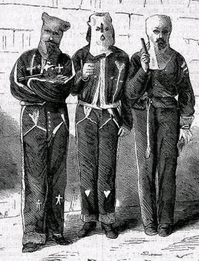

|
The Ku Klux Klan Act, also known as the Third Enforcement Act, was passed by
congress on April 20, 1871 over strong objections by Democrats. The Act was
meant to stop white violence against freedmen in the former Confederate states.
It gave the president, Ulysses S. Grant, the ability to stop "insurrection" by
using military force, or by suspending habeas corpus, which meant he could place
people in jail without charging them.
In 1866, the Ku Klux Klan (KKK) had formed as a social club for former
|

Ku Klux Klansmen in jail, imprisoned under the terms
of the Ku Klux Klan Act.
|
Confederate soldiers. The organization quickly evolved into a vigilante group
that opposed freedmen's rights. The Klan often terrorized blacks and their white
sympathizers by intimidating voters, bullying politicians supportive of Radical
Reconstruction, burning African-American schools and churches, and even
committing murder. Because law enforcement was generally a local matter, and
because local authorities in the South sympathized with the KKK's racial agenda,
crimes against Republicans and freedmen in the South generally went unpunished
by local authorities.
When Congress convened in March 1871, Grant condemned what was happening in
the South, and called for action by the federal government. The Act was passed
in April, and habeas corpus was suspended in nine South Carolina counties in
May. Hundreds of arrests were made and an estimated 2,000 Klansmen fled the
state. Eventually, federal grand juries indicted 3,000 people throughout the
South, bringing the worst offenders to trial and obtaining 600 convictions.
The Ku Klux Klan Act had some impact in lessening violence in the South.
However, in 1876's United States v. Cruikshank, the Supreme Court ruled
that the Act only applied to wrongdoing by state and local governments, not to
acts by individual citizens. Since the KKK was not a part of the government, the
Supreme Court's decision effectively meant that the Ku Klux Klan Act could no
longer be used to stop the Klan. The Act is thus another example of a seeming
victory for the freedmen ultimately being transformed into a defeat.
Source: Joan Waugh, ed., Facts on File Encyclopedia of American
History: Civil War and Reconstruction, 1856 to 1869 (New York: Facts on
File, 2003), 201.
|